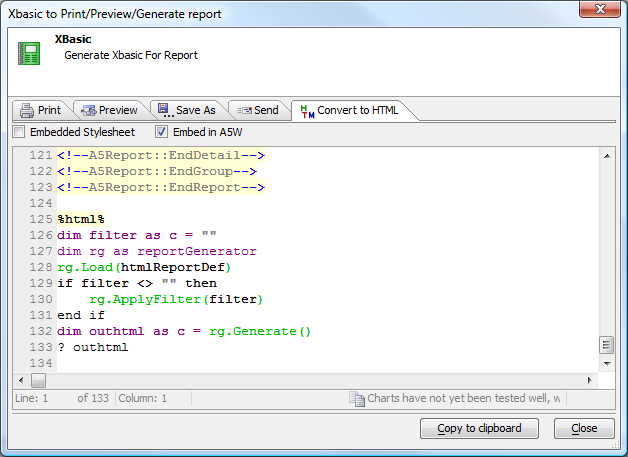

Using a Layout Table Report
Table of contents
Previewing, Printing, Saving, and E-mailing the Report
Layout Table Reports can be previewed, printed, saved, e-mailed, and faxed in any of five formats: PDF, HTML, Rich Text, Plain Text, and Excel. What distinguishes Layout Table Reports from Free Form Reports is the tabular layout that lends itself to high-fidelity rendering as HTML tables and Excel spreadsheets.Embedding a Layout Table Report as Xbasic and HTML in an A5W page
Once you have created a report and successfully previewed it, you can convert it to HTML by right-clicking on the report name in the Control Panel and choosing Show Xbasic..., then viewing the Convert to HTML pane.
Click the check boxes to choose whether you want the report to be on a page by itself or embedded in an A5W page with other material, and whether you want embedded styles or external styles. Then click Copy to Clipboard and paste the code into an A5W page.